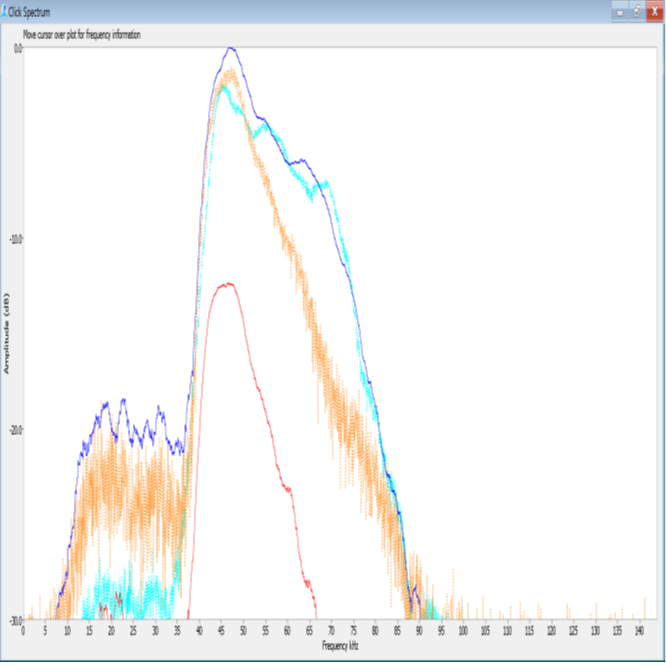

Beaked Whale ID Guide
Introduction
This guide serves as a living document, with the intention to update as more information is learned. To recommend an update or to open a discussion, submit an ‘Issue’ with a useful title and explanation. Go to this link [https://github.com/SAEL-SWFSC/adrift-analysis-methods/issues] to create an Issue, and use the BW-ID label for the issue.
Note: IPI= inter-pulse interval, PPS= pulses per sec
ZC: Ziphius cavirostris, Cuvier’s beaked whale
Peaks: 32-40 kHz, 22-24 kHz and ~18 kHz
Null: Strong null at ~27 kHz
IPI: 0.3-0.5 sec
PPS: 2-3
Upsweep usually evident. Wigner plots shows a “kickstand” (downsweep appearing after the upsweep). Sometimes this kickstand can just appear as a dot. At great range, the 18 and 22 kHz peaks may be higher than the 32-40 kHz peak and the Wigner can just show the downsweep.
Citations:
BB: Berardius bairdii, Baird’s beaked whale
Peak: 15-16 kHz, 25-26 kHz, and, sometimes, 9 kHz and 35-45 kHz
Null: NA
IPI:0.20-0.25 sec
PPS:4-5
Low frequency click, often with multiple peaks. Upsweep is sometimes present, but pulses will look pretty flat on this scale. Can produce dolphin-like clicks as well as these longer pulses. Clicks can come from above the hydrophone.
BW43: Possibly Perrin’s beaked whale
Peak:43 kHz
Null: NA
IPI:~0.22
PPS:4-5
Some higher peaks may be evident if the animal is close. The left limb declines less steeply than with BW46. Wigner is “crescent moon” shaped and lower limb, if present is strongly upswept.
BW43 template (gray) and BW43 click from Baumann and Pickering (blue, pers. comm.)
Peak and slope to the left of peak match well. Slope to the right of peak is much broader, perhaps reflecting proximity or hydrophone differences. Differences in Wigner plots are likely due to scaling differences. [Source: SOCAL41N_DL29_110122_175230.x_0000.wav]
MS: Mesoplodon stejnigeri, Stejniger’s beaked whale
Peak: 44-48 kHz
Null: NA
IPI: 0.09
PPS: 10-11
Peak at about 46kHz (cyan and tan) shown on top of BW43 (gray). Notice how left slope in frequency spectrum declines more steeply than BW43, even when the peaks are similar (dark blue). The right slope is more variable for both types, but is less steep than the left slope.

Frequency has very steeply declining slope to the left of peak. Right slope declines less steeply and may show higher peaks. Wigner shows “sorting cap”. The lower branch of the Wigner (if present) is nearly horizontal.

Some pulses show very strong higher peak at about 75 kHz in addition to a distinct lower peak at about 50 kHz. Some signals (presumable closer or more on-axis) show a strong peak at 80 kHz, a second peak at 52 kHz, and a strong null at about 62 kHz. These may appear in the same event as 44-48kHz pulses (see above). No evidence of “sorting hat” in Wigner.
Again two peaks (green, same group as above). In this case, the lower peak is loudest. Inconspicuous “sorting hat” look to wigner.
MD: Mesoplodon densirostris, Blainville’s beaked whale.
Peak:36 kHz
Null: NA
IPI:0.25-0.33
PPS:3-4
Peak frequency is ~36kHz (similar to Ziphius) but with a very steep decline in amplitudes at lower frequencies (left of the peak). This very clear one shows a secondary peak at 25 kHz, but that is 20dB below the peak and is not likely to be seen in a lower SNR signal. Wigner plot is slightly concave upward, with no sign of “kickstand”.
BW37V: Likely Hubb’s beaked whale
Peak:34kHz, 50 kHz
Null: 37kHz
IPI: 0.125-0.166
PPS: 6-8
BW37V template (green) shows two distinct peaks at about 34 kHz and 50 kHz, with a strong null (valley) at 37kHz. Note: earlier versions may have identified these as BW39V; once the data was corrected for the frequency response of the hydrophone, the null was found to be at 37kHz.
BW70: probably Mesoplodon peruvianus, Pygmy beaked whale,
Peak: 70kHz
Null: NA
IPI: 0.12
PPS: 8
BW70 template (cyan) shows a peak at 70 kHz. Slope to the left of the peak is steeper than to the right. Upsweep in the Wigner plot. [Source is SIO, Baumann & Pickering pers. comm., GofCA4A4_051217_234230.x_1114.wav]
BWC- Cross Seamount beaked whale.
Peak: 60-65 kHz
Null: NA
IPI: 0.127
PPS: 8
Very long click with very long frequency sweep and a peak frequency of about 60-65 kHz. Signals may come from above the hydrophones.
IP: Indopacetus pacificus, Longman’s beaked whale.
Peak: ~26kHz
Null: NA
IPI: 0.27-0.40s
PPS: 3-4
Pulses are low-frequency, with peak at ~26 kHz.
Misc other signals that looked like beaked whales
BW26-47 template (dark green).
Was above hydrophone. May be alternate part of the beam pattern of a BW46. Wigners were variable and odd looking. Some were almost circular. Need to look for others.
BW38 template (lavender).
Maybe M. densitrostris, but no evidence of an upsweep and signal was relatively short.
PM: Physeter macrocephalus, sperm whale.
Low-frequency click, typically < 12 kHz peak. IPI= 0.4-1.0, PPS=1-2.